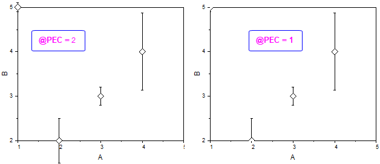
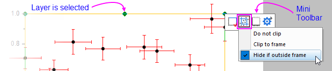
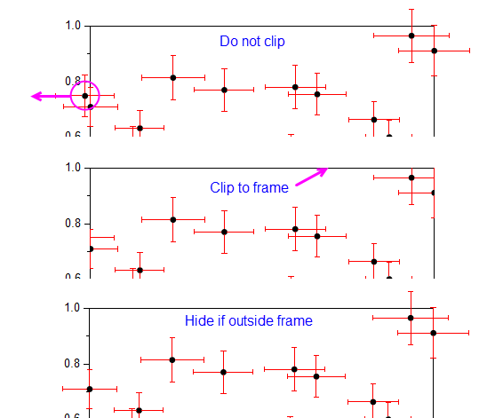

FAQ-1006 Warum werden Datenpunkte, Fehlerbalken und Textbeschriftungen, die sich auf dem Layerrahmen befinden, nicht abgeschnitten?
clip-data-on-graph-edge
Letztes Update: 19.03.2020
Seit Origin 2019b gibt es, wenn das Kontrollkästchen Nur innerhalb des Rahmens im Dialog Details Zeichnung aktiviert ist, per Standard zwei Methoden zum Abschneiden von Datenpunkten, die mit Hilfe der Systemvariable @PEC gewechselt werden können:
- @PEC=2: Diagrammsymbole und Beschriftungen nicht am Rahmen abschneiden. Falls die XY-Werte eines Datenpunkts sich innerhalb der Achsenskala befinden, wird er in diesem Fall vollständig gezeichnet, auch wenn ein Teil von ihm (Fehlerbalken, Beschriftung etc.) außerhalb des Rahmens liegt. Dies ist das Standardverhalten für Origin 2020.
- @PEC=1: Diagrammsymbole und Beschriftungen am Rahmen abschneiden. In diesem Fall werden alle Datenpunkte, die auf der Achsenlinie liegen, teilweise gezeigt. Dies ist das Standardverhalten für Origin 2019b und 2020b.

Um die Art und Weise, wie Symbole im Verhältnis zum Layerrahmen geändert werden, anzuzeigen:
- Klicken Sie einmal in einen leeren Bereich innerhalb des Diagrammlayers. Dadurch wird der Layer markiert.
- Klicken Sie auf die Schaltfläche Nur innerhalb des Rahmens auf der Minisymbolleiste.
- 
-
- Um alle Datenpunkte, Fehlerbalken und Datenbeschriftungen zu zeigen -- auch diejenigen außerhalb des Layerrahmens --, wählen Sie Nicht abschneiden.
- Um alle Elemente (Punkte, Fehlerbalken, Beschriftungen) genau am Layerrahmen abzuschneiden, wählen Sie An Rahmen anpassen.
- Um die Datenpunkte außerhalb des Layerrahmens abzuschneiden, die Datenpunkte jedoch vollständig zu zeigen (mitsamt ihren Elementen wie Fehlerbalken, Beschriftung etc.), deren Zentren auf oder innerhalb des Layerrahmens liegen, führen Sie
@PEC=2; im Befehlsfenster oder Skriptfenster aus und wählen dann Verbergen, falls außerhalb des Rahmens.
- 
Schlüsselwörter:Rahmen abschneiden, am Rahmen abschneiden, auf der Kante liegen, auf der Achse abschneiden, teilweise